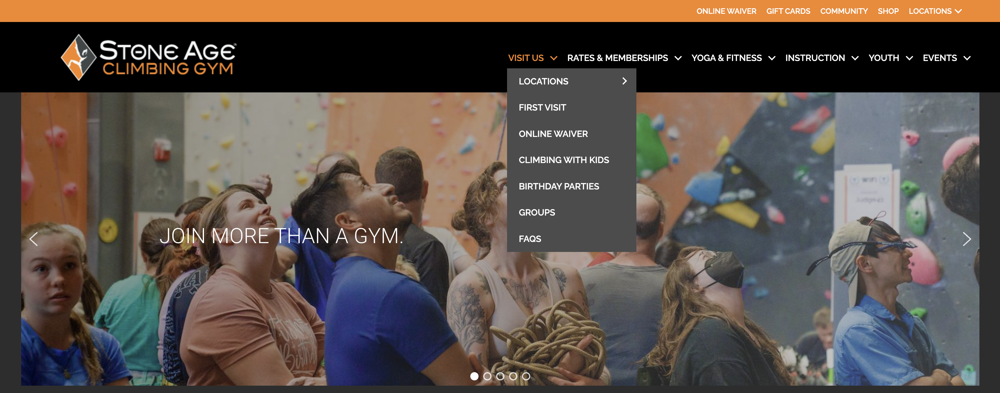
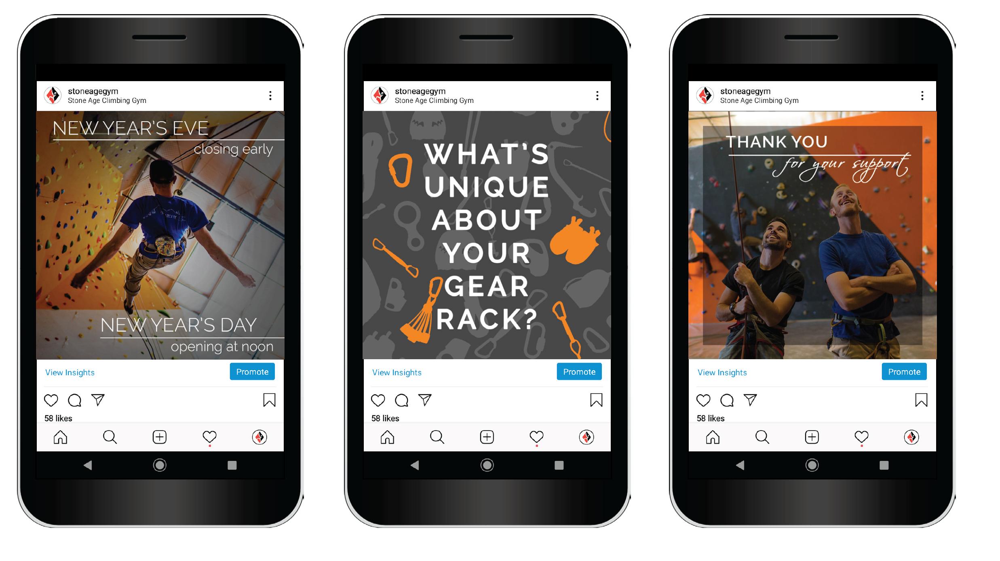
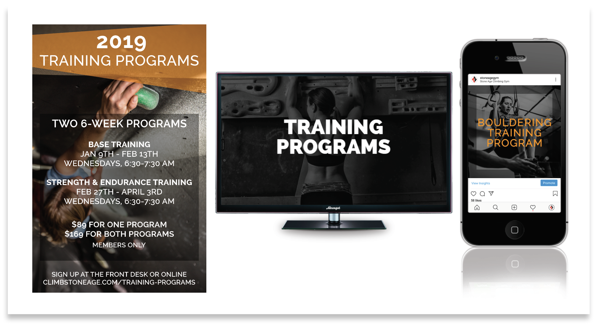
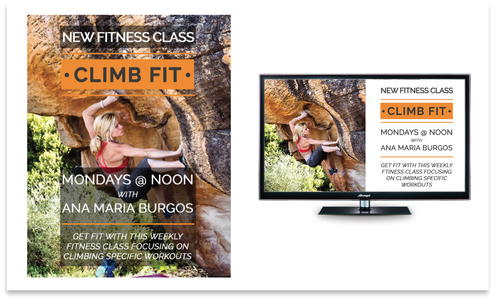
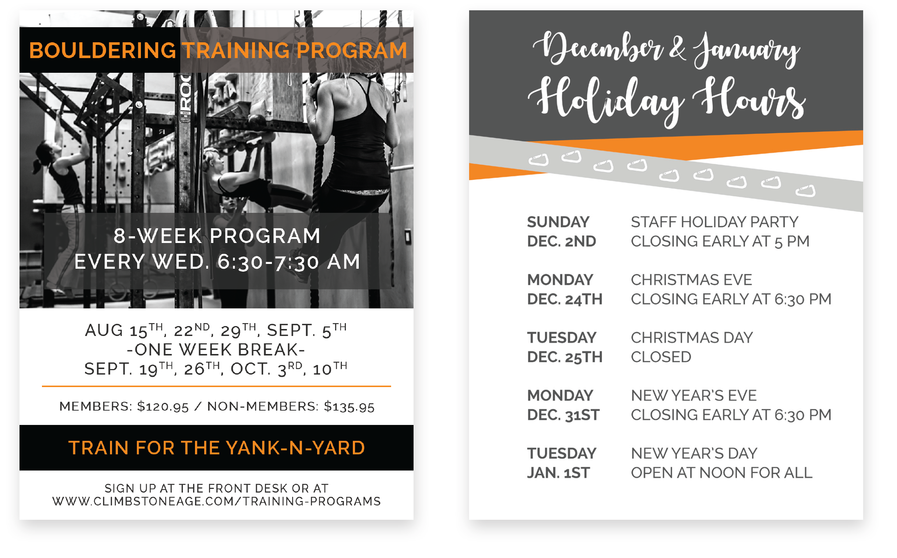

Stone Age Climbing Gym
Stone Age Climbing Gym serves a community of more than 3,000 members through a diverse range of programs, events, and services. My role involved developing and managing multimedia marketing campaigns across multiple platforms, including social media, printed materials, in-gym digital displays, website content, and promotional advertising. With audiences ranging from first-time visitors and members to school groups, birthday parties, fitness participants, and community events such as Ladies Night, maintaining clear communication and consistent messaging was essential.
This project demonstrates the importance of integrated visual communication and brand consistency across digital and print media — how design systems, audience awareness, and multimedia production work together to create cohesive campaigns that engage diverse audiences across multiple touchpoints.





This project demonstrates how user experience design and information architecture can improve navigation for organizations that serve multiple audiences. Through strategic content creation and UX-focused design, I created clearer pathways for users to find relevant information and engage with the services that best met their needs.